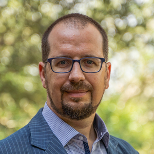

My father is Joseph Nahas, an inventor with over 30 patents for CPUs and magnetic memory. On my mother's side, my uncle Bernard Lechner conceived the active-matrix LCD screen, which was used in billions of smartphones, laptops, and flat-screen TVs. From a young age, I was exposed to math, engineering, and technology. As a kid, I won a science fair, attended Johns Hopkins University's Center for Talented Youth, and tied for 6th in a state-wide math competition.
I graduated with honors from the University of Notre Dame. Then, I went to the University of Virginia and earned a Master's in Computer Science. My work on the Colossus supercomputer was cited over 300 times. While looking for a job, I designed the .par2 file format. It has been used by millions to protect their data and is referenced in the title of a hacker TV show, Mr. Robot episode "eps3.3_metadata.par2".
In 2002, I helped protect US software by researching code obfuscation with military contractor Architecture Technology Corporation in Eden Prairie, MN. In 2004, I became the 8th employee at a financial technology startup, Broadway Technology LLC, in New York, NY. I used atomic CPU operations to get exceptional performance from multi-threaded programs. I left Broadway Technology in 2007, but it went on to be a success and was sold to ION Investment Group.
In 2007, I became a quantitative trader for Walleye Trading LLC, also in New York, NY. I used hill-climbing with random restart to convert 16,000 linear algebra coefficients into 10 parameters of a decaying exponential, which made the calculation both faster and provably stable. My code predicted 600 stocks on a single CPU and saved the company $18,000 per day.
In 2012, I returned to research and became a Visitor at the Institute for Advanced Study, where Albert Einstein worked. I helped write "Homotopy Type Theory", a book that proposed changing the foundation of mathematics from set theory to type theory.
In late 2013, I returned to Austin, TX to help my brother who had fractured his femur. In 2017, I received a Master's in Economics at University of Texas at Austin. Since 2018, I've worked with AURA, a non-profit focused on housing and transportation in Austin. In May 2024, I achieved my goal with AURA when City Council reduced the minimum lot size, which was driving up home prices by forcing purchasers to buy more land than they wanted.
In 2025, while on Austin's Economic Prosperity Commission, I studied Austin's pensions and found that the city had borrowed $3.5 billion from them. I wrote a report on the subject and the commission passed two recommendations to City Council. In 2026, I started running for Austin City Council in District 1.